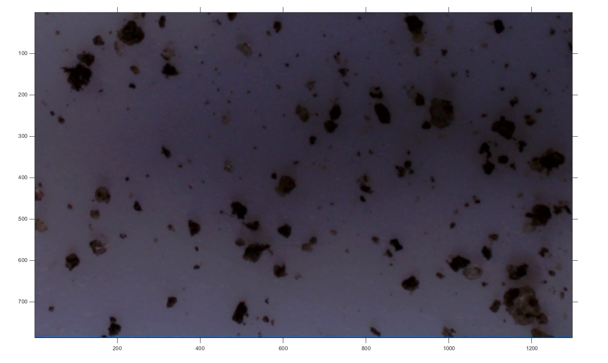
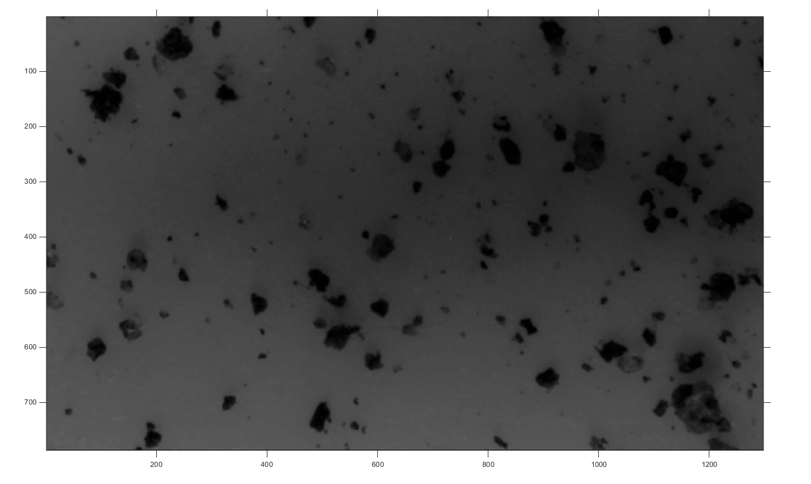
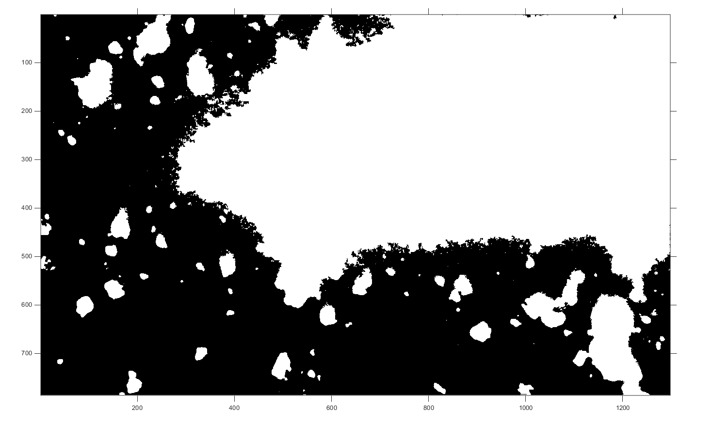
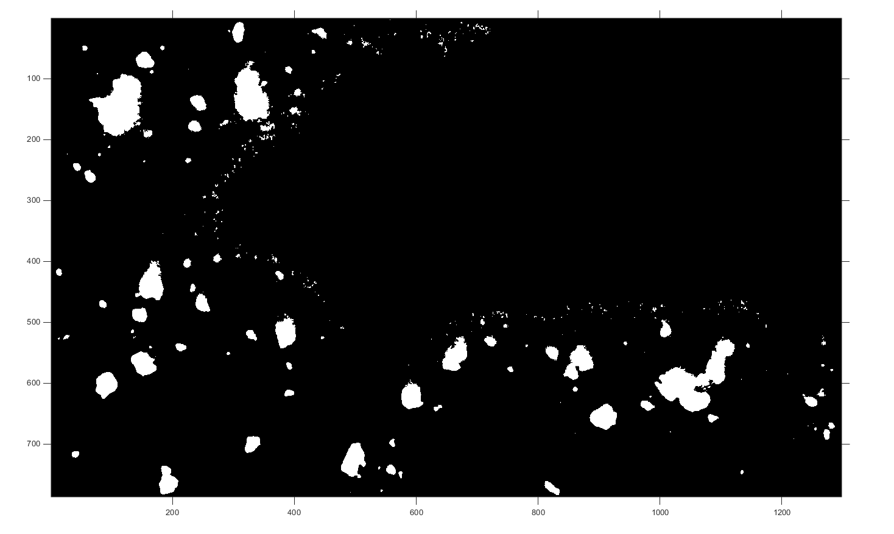
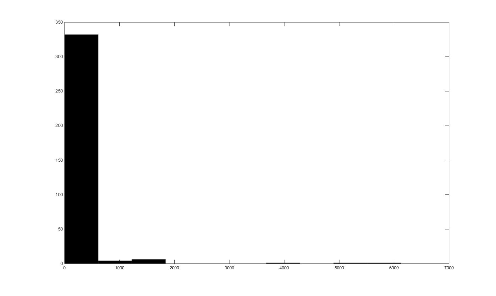
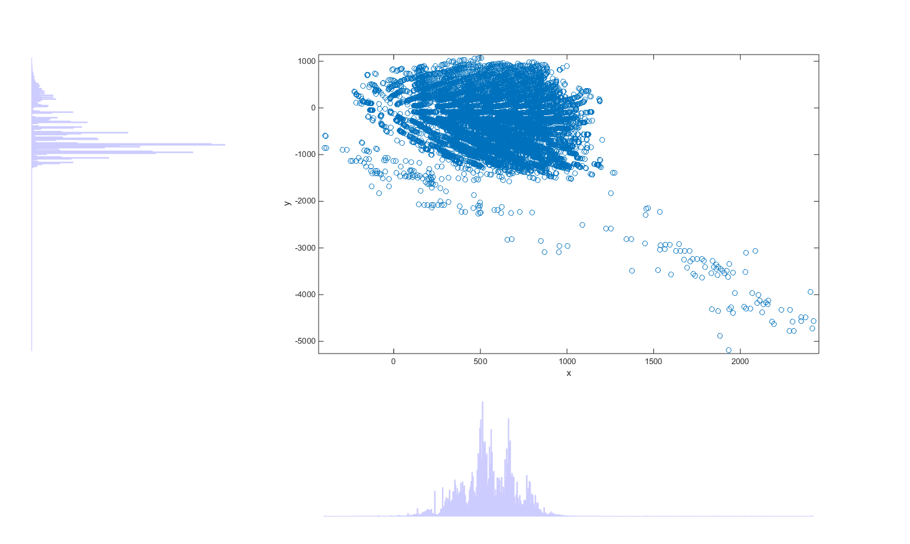

Contents
Init Beaglebone connection
tic;
clear;
bbb = beaglebone_black('192.168.178.20', 'root', 'open');
system(bbb, './pwm_vision_matlab');
formatSpec = 'Setting up de Beaglebone %d [sec].';
str = sprintf(formatSpec,toc);
disp(str);
Setting up de Beaglebone 4.105980e+00 [sec].
Init the CAM
tic;
cam = videoinput('winvideo', 1, 'MJPG_2048x1536');
cam.FramesPerTrigger = 1;
border = 750;
cam.ROIPosition = [ border border 2048-border 1536-border ];
src = getselectedsource(cam);
src.BacklightCompensation = 'off';
src.Sharpness = 2;
src.Contrast = 40;
formatSpec = 'Setting up de cam %d [sec].';
str = sprintf(formatSpec,toc);
disp(str);
Setting up de cam 2.202551e+00 [sec].
Get Images
tic;
system(bbb, 'echo 1 > /sys/class/gpio/gpio51/value && echo 1 > /sys/class/gpio/gpio50/value && echo 1 > /sys/class/gpio/gpio60/value');
start(cam)
I = getdata(cam);
system(bbb, 'echo 0 > /sys/class/gpio/gpio51/value && echo 0 > /sys/class/gpio/gpio50/value && echo 0 > /sys/class/gpio/gpio60/value');
imshow(I)
formatSpec = 'Getting a image %d [sec].';
str = sprintf(formatSpec,toc);
disp(str);
Getting a image 6.296281e+00 [sec].

Convert RGB to Intensity
tic;
hcsc = vision.ColorSpaceConverter('Conversion', 'RGB to intensity');
Int = step(hcsc, I);
imshow(Int)
formatSpec = 'Convert RGB to Intensity %d [sec].';
str = sprintf(formatSpec,toc);
disp(str);
Convert RGB to Intensity 1.571493e-01 [sec].

Convert to BW
tic;
H = vision.Autothresholder;
BW = step(H, Int);
BW = imfill(~BW,'holes');
imshow(BW)
formatSpec = 'Convert to BW %d [sec].';
str = sprintf(formatSpec,toc);
disp(str);
Convert to BW 2.440793e-01 [sec].

Remove border blobs
tic;
[r c] = size(BW);
BW(1, :) = 1;
BW(:, 1) = 1;
BW(r, :) = 1;
BW(:, c) = 1;
BWl = bwlabel(BW,8);
BWl(BWl == BWl(1,1)) = 0;
BWl(BWl > 0) = 1;
BWl = logical(BWl);
imshow(BWl)
formatSpec = 'Remove border blobs %d [sec].';
str = sprintf(formatSpec,toc);
disp(str);
Remove border blobs 1.178870e-01 [sec].

Calulate Area
tic;
L = bwlabel(BWl,8);
s = regionprops(L,'Area');
area = cat(1, s.Area);
hist(area);
formatSpec = 'Calulate Area %d [sec].';
str = sprintf(formatSpec,toc);
disp(str);
Calulate Area 6.882696e-02 [sec].

Get color matrix of foreground
tic;
[m n ~] = size(I);
Ic(m, n, 3)=0;
Ic(:,:,1) = I(:,:,1).*uint8(BW);
Ic(:,:,2) = I(:,:,2).*uint8(BW);
Ic(:,:,3) = I(:,:,3).*uint8(BW);
Ic = uint8(Ic);
formatSpec = 'Get Color Matrix %d [sec].';
str = sprintf(formatSpec,toc);
disp(str);
Get Color Matrix 6.355854e-02 [sec].
Calc CIE La*b*
tic;
hcscLAB = vision.ColorSpaceConverter;
hcscLAB.Conversion = 'sRGB to L*a*b*';
LAB2 = step(hcscLAB, double(Ic));
L2 = LAB2(:,:,1);
a2 = LAB2(:,:,2);
b2 = LAB2(:,:,3);
a2(L2 == 0) = NaN;
b2(L2 == 0) = NaN;
scatterhist(a2(:),b2(:))
formatSpec = 'Calc CIE La*b* alternative 2 %d [sec].';
str = sprintf(formatSpec,toc);
disp(str);
Calc CIE La*b* alternative 2 2.521006e+00 [sec].

Calc RI
tic;
RI(m, n) = 0;
parfor i = 1:m
for j = 1:n
RI(i,j) = ((a2(i,j)*(a2(i,j)^2 + b2(i,j)^2)^(1/2))*10^(8.2))/(b2(i,j)*L2(i,j)^6);
end
end
RI(L == 0) = NaN;
formatSpec = 'Calc RI %d [sec].';
str = sprintf(formatSpec,toc);
disp(str);
Calc RI 2.851456e+00 [sec].